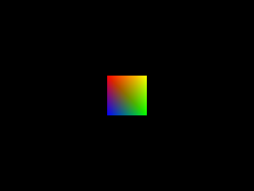

Multi-Color Polygons and Attributes

Last Updated 10/19/14
In the old fixed function pipeline, they had built in attributes for vertex positions, vertex color, vertex normals, vertex texture coordinates, etc. When GLSL rolled in they let the user define their own custom attributes. When the big API clean up with OpenGL 3.0+ came around, the designers realized that all the built in attributes were just vectors, so they could just have the user define the features that they needed.For this tutorial, we could have used the built in glColorPointer() function from OpenGL 2.1 to render a multicolor polygon. Instead we're going to define our own vertex position and vertex color attributes so the code is forward compatible with OpenGL 3.0+.
From LMultiColorPolygonProgram2D.glvs
//Transformation Matrices
uniform mat4 LProjectionMatrix;
uniform mat4 LModelViewMatrix;
#if __VERSION__ >= 130
//Vertex position attribute
in vec2 LVertexPos2D;
//Multicolor attribute
in vec3 LMultiColor;
out vec4 multiColor;
At the top of our vertex shader, we have our uniform variables from the plain polygon shader. Then we use the "#if" preprocessor to check which version of GLSL we have available
to us. The reason is if the GLSL version is 1.30 or greater we want to compile the code you see above, otherwise we want to compile with the code you'll see next.
What you see above is the declaration of GLSL attribute variables done in the modern OpenGL 3.0+ way. We have a 2D vector we take in named "LVertexPos2D". This variable will define the position of the vertex. The built in "gl_Vertex" attribute from GLSL version 1.20 was deprecated in the OpenGL 3.0 release.
We also take in a 4 dimensional vector "LMultiColor" which represents the r, g, b, a values of a vertex color. Finally we send out a "multiColor" attribute for every vertex we process. Where does it go out to? The fragment shader because we need to know the color of the vertex to properly color the fragments.
What you see above is the declaration of GLSL attribute variables done in the modern OpenGL 3.0+ way. We have a 2D vector we take in named "LVertexPos2D". This variable will define the position of the vertex. The built in "gl_Vertex" attribute from GLSL version 1.20 was deprecated in the OpenGL 3.0 release.
We also take in a 4 dimensional vector "LMultiColor" which represents the r, g, b, a values of a vertex color. Finally we send out a "multiColor" attribute for every vertex we process. Where does it go out to? The fragment shader because we need to know the color of the vertex to properly color the fragments.
#else
//Vertex position attribute
attribute vec2 LVertexPos2D;
//Multicolor attribute
attribute vec3 LMultiColor;
varying vec4 multiColor;
#endif
What you see here is pretty much the same as the previous chunk of code only it's done with OpenGL 2 style attribute declaration. "attribute" variables are attributes that go into
the vertex shader. "varying" variables go out from the vertex shader into the fragment shader.
If you're making a large scale program it's probably best to have your C++/C/Java/Python/whatever OpenGL program detect at runtime what GLSL version your GPU supports and then load a GLSL shader file that has the code for the particular version of GLSL want to support. For the sake of not having to distribute multiple shader files with this tutorial, I put the shader source in one file and used preprocessors to have it compile differently based on the GLSL version.
If you're making a large scale program it's probably best to have your C++/C/Java/Python/whatever OpenGL program detect at runtime what GLSL version your GPU supports and then load a GLSL shader file that has the code for the particular version of GLSL want to support. For the sake of not having to distribute multiple shader files with this tutorial, I put the shader source in one file and used preprocessors to have it compile differently based on the GLSL version.
From LMultiColorPolygonProgram2D.glvs
void main()
{
//Process color
multiColor = LMultiColor;
//Process vertex
gl_Position = LProjectionMatrix * LModelViewMatrix * vec4( LVertexPos2D.x, LVertexPos2D.y, 0.0, 1.0 );
}
There the main function that gets called on every vertex we process.
For "LMultiColor", we just pass it through to "multiColor". If we wanted to, we could do matrix tranformations on the color (it is a vector after all) to do effects like greyscale or sephia tone.
Calculating the vertex position pretty much works the same as before only now we're not using the built in vertex attribute and we're converting the 2D positions into a 4D vector.
For "LMultiColor", we just pass it through to "multiColor". If we wanted to, we could do matrix tranformations on the color (it is a vector after all) to do effects like greyscale or sephia tone.
Calculating the vertex position pretty much works the same as before only now we're not using the built in vertex attribute and we're converting the 2D positions into a 4D vector.
From LMultiColorPolygonProgram2D.glfs
#if __VERSION__ >= 130
//Multicolor attribute
in vec4 multiColor;
//Final color
out vec4 gl_FragColor;
#else
//Multicolor attribute
varying vec4 multiColor;
#endif
Here's the top of the fragment shader with some more voodoo to get this to compile with both GLSL 1.3 and 1.2.
With the GLSL 1.3 code, we take in the "multicolor" variable from the vertex shader and we declare "gl_FragColor" to send out to the color buffer.
With the GLSL 1.2 code, we declare the varying "multicolor". If you're passing one variable from one shader to another it should have the same name in both shaders no matter which version of GLSL you're using.
If you're wondering why I don't declare "gl_FragColor" in the GLSL 1.2 code, it's because it's already built into GLSL 1.2 as the color that goes out to the color buffer. If this shader source was only designed to support GLSL 1.3, I would have probably have named the out variable for the color buffer something besides a reserved word from GLSL 1.2.
This is another case of me trying to support GLSL 1.2 and 1.3+ with the same source file.
With the GLSL 1.3 code, we take in the "multicolor" variable from the vertex shader and we declare "gl_FragColor" to send out to the color buffer.
With the GLSL 1.2 code, we declare the varying "multicolor". If you're passing one variable from one shader to another it should have the same name in both shaders no matter which version of GLSL you're using.
If you're wondering why I don't declare "gl_FragColor" in the GLSL 1.2 code, it's because it's already built into GLSL 1.2 as the color that goes out to the color buffer. If this shader source was only designed to support GLSL 1.3, I would have probably have named the out variable for the color buffer something besides a reserved word from GLSL 1.2.
This is another case of me trying to support GLSL 1.2 and 1.3+ with the same source file.
From LMultiColorPolygonProgram2D.glfs
void main()
{
//Set fragment
LFragment = multiColor;
}
For the fragment shader, we have the "multiColor" taken in from the vertex shader and a fragment color we're going to be sending out to be used for rasterization. For this
shader all we do is use the color from the vertex shader and send it out to the rasterizer to color to polygon.
From LColorRGBA.h
#include "LOpenGL.h"
struct LColorRGBA
{
GLfloat r;
GLfloat g;
GLfloat b;
GLfloat a;
};
Here's the data type we're going to be using to define a RGBA color.
From LMultiColorVertex2D.h
#include "LVertexPos2D.h"
#include "LColorRGBA.h"
struct LMultiColorVertex2D
{
LVertexPos2D pos;
LColorRGBA rgba;
};
And here's the data type that defines the data for a colored vertex.
From LMultiColorPolygonProgram2D.h
#include "LShaderProgram.h"
#include <glm/glm.hpp>
class LMultiColorPolygonProgram2D : public LShaderProgram
{
public:
LMultiColorPolygonProgram2D();
/*
Pre Condition:
-None
Post Condition:
-Initializes variables
Side Effects:
-None
*/
bool loadProgram();
/*
Pre Condition:
-A valid OpenGL context
Post Condition:
-Loads multicolor polygon program
Side Effects:
-None
*/
void setVertexPointer( GLsizei stride, const GLvoid* data );
/*
Pre Condition:
-Bound LMultiColorPolygonProgram2D
Post Condition:
-Sets vertex position attribute pointer
Side Effects:
-None
*/
void setColorPointer( GLsizei stride, const GLvoid* data );
/*
Pre Condition:
-Bound LMultiColorPolygonProgram2D
Post Condition:
-Sets vertex color attribute pointer
Side Effects:
-None
*/
void enableVertexPointer();
/*
Pre Condition:
-Bound LMultiColorPolygonProgram2D
Post Condition:
-Enables vertex position attribute
Side Effects:
-None
*/
void disableVertexPointer();
/*
Pre Condition:
-Bound LMultiColorPolygonProgram2D
Post Condition:
-Disables vertex position attribute
Side Effects:
-None
*/
void enableColorPointer();
/*
Pre Condition:
-Bound LMultiColorPolygonProgram2D
Post Condition:
-Enables vertex color attribute
Side Effects:
-None
*/
void disableColorPointer();
/*
Pre Condition:
-Bound LMultiColorPolygonProgram2D
Post Condition:
-Disables vertex color attribute
Side Effects:
-None
*/
void setProjection( glm::mat4 matrix );
/*
Pre Condition:
-None
Post Condition:
-Sets member projection matrix
Side Effects:
-None
*/
void setModelView( glm::mat4 matrix );
/*
Pre Condition:
-None
Post Condition:
-Sets member modelview matrix
Side Effects:
-None
*/
void leftMultProjection( glm::mat4 matrix );
/*
Pre Condition:
-None
Post Condition:
-Left multiplies member projection matrix
Side Effects:
-None
*/
void leftMultModelView( glm::mat4 matrix );
/*
Pre Condition:
-None
Post Condition:
-Left multiplies member modelview matrix
Side Effects:
-None
*/
void updateProjection();
/*
Pre Condition:
-Bound LMultiColorPolygonProgram2D
Post Condition:
-Updates shader program projection matrix with member projection matrix
Side Effects:
-None
*/
void updateModelView();
/*
Pre Condition:
-Bound LMultiColorPolygonProgram2D
Post Condition:
-Updates shader program modelview matrix with member modelview matrix
Side Effects:
-None
*/
private:
//Attribute locations
GLint mVertexPos2DLocation;
GLint mMultiColorLocation;
//Projection matrix
glm::mat4 mProjectionMatrix;
GLint mProjectionMatrixLocation;
//Modelview matrix
glm::mat4 mModelViewMatrix;
GLint mModelViewMatrixLocation;
};
The new LMultiColorPolygonProgram2D should largely familiar, only now it has new functions to handle the custom attributes which we'll go over in detail in their implementations.
As with uniform variables, attributes have locations that we use to set them in the shader program. "mVertexPos2DLocation" and "mMultiColorLocation" will specify the location of our attributes in the shader.
As with uniform variables, attributes have locations that we use to set them in the shader program. "mVertexPos2DLocation" and "mMultiColorLocation" will specify the location of our attributes in the shader.
From LMultiColorPolygonProgram2D.cpp
bool LMultiColorPolygonProgram2D::loadProgram()
{
//Generate program
mProgramID = glCreateProgram();
//Load vertex shader
GLuint vertexShader = loadShaderFromFile( "33_multi-color_polygons_and_attributes/LMultiColorPolygonProgram2D.glvs", GL_VERTEX_SHADER );
//Check for errors
if( vertexShader == 0 )
{
glDeleteProgram( mProgramID );
mProgramID = 0;
return false;
}
//Attach vertex shader to program
glAttachShader( mProgramID, vertexShader );
//Create fragment shader
GLuint fragmentShader = loadShaderFromFile( "33_multi-color_polygons_and_attributes/LMultiColorPolygonProgram2D.glfs", GL_FRAGMENT_SHADER );
//Check for errors
if( fragmentShader == 0 )
{
glDeleteShader( vertexShader );
glDeleteProgram( mProgramID );
mProgramID = 0;
return false;
}
//Attach fragment shader to program
glAttachShader( mProgramID, fragmentShader );
//Link program
glLinkProgram( mProgramID );
//Check for errors
GLint programSuccess = GL_TRUE;
glGetProgramiv( mProgramID, GL_LINK_STATUS, &programSuccess );
if( programSuccess != GL_TRUE )
{
printf( "Error linking program %d!\n", mProgramID );
printProgramLog( mProgramID );
glDeleteShader( vertexShader );
glDeleteShader( fragmentShader );
glDeleteProgram( mProgramID );
mProgramID = 0;
return false;
}
//Clean up excess shader references
glDeleteShader( vertexShader );
glDeleteShader( fragmentShader );
//Get variable locations
mVertexPos2DLocation = glGetAttribLocation( mProgramID, "LVertexPos2D" );
if( mVertexPos2DLocation == -1 )
{
printf( "%s is not a valid glsl program variable!\n", "LVertexPos2D" );
}
mMultiColorLocation = glGetAttribLocation( mProgramID, "LMultiColor" );
if( mMultiColorLocation == -1 )
{
printf( "%s is not a valid glsl program variable!\n", "LMultiColor" );
}
mProjectionMatrixLocation = glGetUniformLocation( mProgramID, "LProjectionMatrix" );
if( mProjectionMatrixLocation == -1 )
{
printf( "%s is not a valid glsl program variable!\n", "LProjectionMatrix" );
}
mModelViewMatrixLocation = glGetUniformLocation( mProgramID, "LModelViewMatrix" );
if( mModelViewMatrixLocation == -1 )
{
printf( "%s is not a valid glsl program variable!\n", "LModelViewMatrix" );
}
return true;
}
Our shader program loading code is mostly the same only now we use glGetAttribLocation() to get the location of our attributes from the shader much in the same way we used
glGetUniformLocation() to get the location of our uniform variables.
From LMultiColorPolygonProgram2D.cpp
void LMultiColorPolygonProgram2D::setVertexPointer( GLsizei stride, const GLvoid* data )
{
glVertexAttribPointer( mVertexPos2DLocation, 2, GL_FLOAT, GL_FALSE, stride, data );
}
void LMultiColorPolygonProgram2D::setColorPointer( GLsizei stride, const GLvoid* data )
{
glVertexAttribPointer( mMultiColorLocation, 4, GL_FLOAT, GL_FALSE, stride, data );
}
The function glVertexAttribPointer() allows us to set the data for an array of attributes, much in the same way we did with glVertexPointer() and glTexCoordPointer(). This generic
function is what we'll use to send our custom vertex attribute data.
The first argument is the location for the attribute you want to set data for. The second argument is how many elements per attributes there are. For the 2D vertex position there's two elements and for the RGBA color there are 4 elements. The third argument is the data type. The fourth argument says whether you want to normalize the vector data you're sending. The fifth argument is the stride (which as you'll remember is the space in bytes between each attribute), and the last argument is the address the data pointer is pointing to.
Our shader program has the wrapper functions setVertexPointer() and setColorPointer() to prevent us from having to write a lot of redundant code.
The first argument is the location for the attribute you want to set data for. The second argument is how many elements per attributes there are. For the 2D vertex position there's two elements and for the RGBA color there are 4 elements. The third argument is the data type. The fourth argument says whether you want to normalize the vector data you're sending. The fifth argument is the stride (which as you'll remember is the space in bytes between each attribute), and the last argument is the address the data pointer is pointing to.
Our shader program has the wrapper functions setVertexPointer() and setColorPointer() to prevent us from having to write a lot of redundant code.
From LMultiColorPolygonProgram2D.cpp
void LMultiColorPolygonProgram2D::enableVertexPointer()
{
glEnableVertexAttribArray( mVertexPos2DLocation );
}
void LMultiColorPolygonProgram2D::disableVertexPointer()
{
glDisableVertexAttribArray( mVertexPos2DLocation );
}
void LMultiColorPolygonProgram2D::enableColorPointer()
{
glEnableVertexAttribArray( mMultiColorLocation );
}
void LMultiColorPolygonProgram2D::disableColorPointer()
{
glDisableVertexAttribArray( mMultiColorLocation );
}
Just like how glVertexPointer() and glTexCoordPointer() had glEnableClientState() and glDisableClientState(), the custom vertex attributes have glEnableVertexAttribArray() and
glDisableVertexAttribArray() to enable/disable the attributes.
From LMultiColorPolygonProgram2D.cpp
void LMultiColorPolygonProgram2D::setProjection( glm::mat4 matrix )
{
mProjectionMatrix = matrix;
}
void LMultiColorPolygonProgram2D::setModelView( glm::mat4 matrix )
{
mModelViewMatrix = matrix;
}
void LMultiColorPolygonProgram2D::leftMultProjection( glm::mat4 matrix )
{
mProjectionMatrix = matrix * mProjectionMatrix;
}
void LMultiColorPolygonProgram2D::leftMultModelView( glm::mat4 matrix )
{
mModelViewMatrix = matrix * mModelViewMatrix;
}
void LMultiColorPolygonProgram2D::updateProjection()
{
glUniformMatrix4fv( mProjectionMatrixLocation, 1, GL_FALSE, glm::value_ptr( mProjectionMatrix ) );
}
void LMultiColorPolygonProgram2D::updateModelView()
{
glUniformMatrix4fv( mModelViewMatrixLocation, 1, GL_FALSE, glm::value_ptr( mModelViewMatrix ) );
}
And the rest of these matrix functions should all look familiar.
From LUtil.cpp
bool loadMedia()
{
//VBO data
LMultiColorVertex2D quadVertices[ 4 ];
GLuint indices[ 4 ];
//Set quad verticies
quadVertices[ 0 ].pos.x = -50.f;
quadVertices[ 0 ].pos.y = -50.f;
quadVertices[ 0 ].rgba.r = 1.f;
quadVertices[ 0 ].rgba.g = 0.f;
quadVertices[ 0 ].rgba.b = 0.f;
quadVertices[ 0 ].rgba.a = 1.f;
quadVertices[ 1 ].pos.x = 50.f;
quadVertices[ 1 ].pos.y = -50.f;
quadVertices[ 1 ].rgba.r = 1.f;
quadVertices[ 1 ].rgba.g = 1.f;
quadVertices[ 1 ].rgba.b = 0.f;
quadVertices[ 1 ].rgba.a = 1.f;
quadVertices[ 2 ].pos.x = 50.f;
quadVertices[ 2 ].pos.y = 50.f;
quadVertices[ 2 ].rgba.r = 0.f;
quadVertices[ 2 ].rgba.g = 1.f;
quadVertices[ 2 ].rgba.b = 0.f;
quadVertices[ 2 ].rgba.a = 1.f;
quadVertices[ 3 ].pos.x = -50.f;
quadVertices[ 3 ].pos.y = 50.f;
quadVertices[ 3 ].rgba.r = 0.f;
quadVertices[ 3 ].rgba.g = 0.f;
quadVertices[ 3 ].rgba.b = 1.f;
quadVertices[ 3 ].rgba.a = 1.f;
//Set rendering indices
indices[ 0 ] = 0;
indices[ 1 ] = 1;
indices[ 2 ] = 2;
indices[ 3 ] = 3;
//Create VBO
glGenBuffers( 1, &gVBO );
glBindBuffer( GL_ARRAY_BUFFER, gVBO );
glBufferData( GL_ARRAY_BUFFER, 4 * sizeof(LMultiColorVertex2D), quadVertices, GL_STATIC_DRAW );
//Create IBO
glGenBuffers( 1, &gIBO );
glBindBuffer( GL_ELEMENT_ARRAY_BUFFER, gIBO );
glBufferData( GL_ELEMENT_ARRAY_BUFFER, 4 * sizeof(GLuint), indices, GL_STATIC_DRAW );
return true;
}
In our loadMedia() function we set the vertex position and vertex color attribute data and create the VBO from it.
From LUtil.cpp
void render()
{
//Clear color buffer
glClear( GL_COLOR_BUFFER_BIT );
//Multicolor quad in the center
gMultiColorPolygonProgram2D.setModelView( glm::translate( glm::vec3( SCREEN_WIDTH / 2.f, SCREEN_HEIGHT / 2.f, 0.f ) ) );
gMultiColorPolygonProgram2D.updateModelView();
//Enable vertex attributes
gMultiColorPolygonProgram2D.enableVertexPointer();
gMultiColorPolygonProgram2D.enableColorPointer();
//Set vertex data
glBindBuffer( GL_ARRAY_BUFFER, gVBO );
gMultiColorPolygonProgram2D.setVertexPointer( sizeof(LMultiColorVertex2D), (GLvoid*)offsetof( LMultiColorVertex2D, pos ) );
gMultiColorPolygonProgram2D.setColorPointer( sizeof(LMultiColorVertex2D), (GLvoid*)offsetof( LMultiColorVertex2D, rgba ) );
//Draw quad using vertex data and index data
glBindBuffer( GL_ELEMENT_ARRAY_BUFFER, gIBO );
glDrawElements( GL_TRIANGLE_FAN, 4, GL_UNSIGNED_INT, NULL );
//Disable vertex attributes
gMultiColorPolygonProgram2D.disableVertexPointer();
gMultiColorPolygonProgram2D.disableColorPointer();
//Update screen
glutSwapBuffers();
}
Finally in the render() function we translate to the center of the screen, enable our attributes for drawing, bind the VBO, set the data pointers in the VBO, draw the quad (using
a triangle fan) and disable the attributes after we're done drawing.
Setting attribute arrays work largely the same as using the fixed function attributes only now you have to specify a location in the shader.
Setting attribute arrays work largely the same as using the fixed function attributes only now you have to specify a location in the shader.
From main.cpp
//Create OpenGL 2.1 context
glutInitContextVersion( 2, 1 );
Remember this old code snipped that set your OpenGL context version? If your computer supports it, try changing it to 3.1 instead of 2.1. OpenGL 3.1 is when all the old deprecated
functionality was removed from OpenGL. Since our code no longer uses deprecated functionality, it should run the same.
Congratuations, you are now using 100% programmable OpenGL code.
Congratuations, you are now using 100% programmable OpenGL code.